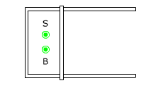

Tomamos el vector
superficie de la espira hacia afuera de la pantalla

La
espira tiene flujo positivo
Al desplazar
el segmento móvil hacia la derecha aumentará el área
de la espira y por tanto aumentará el flujo positivo
Para compensar el aumento de flujo positivo se tendrá
que crear flujo negativo. Para producirlo tendrá que aparecer
un campo adicional B' en dirección contraria al vector
superficie
Para que
aparezca un campo con la dirección de B' la corriente inducida
I' tendrá que circular en sentido de las agujas del reloj